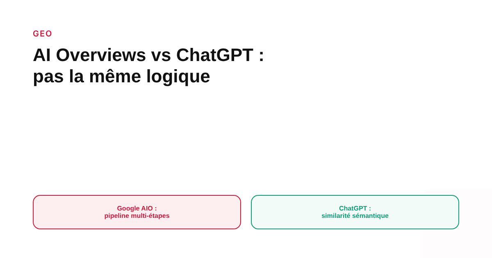
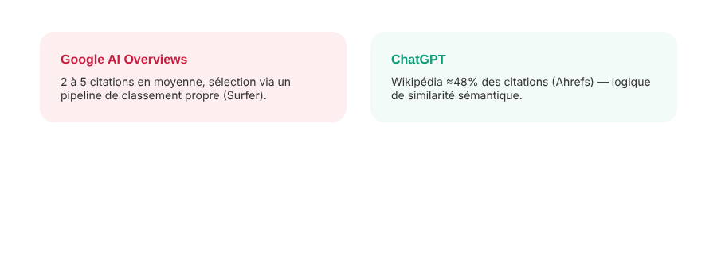

Comment Google AI Overviews choisit ses sources, et pourquoi ce n'est pas la même logique que ChatGPT
Apparaître dans les AI Overviews de Google et être cité par ChatGPT sont souvent traités comme un seul et même objectif GEO. Les données disponibles suggèrent plutôt deux mécanismes distincts, qui ne favorisent pas les mêmes types de sources.

Aucune des deux entreprises n'a publié de documentation détaillant précisément comment ses citations sont choisies. Ce qu'on peut observer vient d'analyses indépendantes, menées par des outils SEO qui suivent les citations sur de larges échantillons de requêtes. Leurs méthodologies diffèrent, leurs chiffres exacts aussi — mais un constat revient de façon cohérente d'une étude à l'autre : Google AI Overviews et ChatGPT ne puisent pas dans le même type de sources, ni selon le même mécanisme.
Un pipeline multi-étapes pour Google, une recherche web pour ChatGPT
D'après une analyse d'un éditeur d'outils SEO (Surfer), les AI Overviews de Google fonctionneraient par un processus en plusieurs étapes qui réduit un large pool de pages candidates à un petit nombre de citations finales, généralement entre 2 et 5. Cette même analyse note que les sources citées par Google dans ses AI Overviews ne correspondent pas systématiquement aux pages les mieux classées dans les résultats organiques classiques pour la même requête — un signal que la sélection obéit à une logique au moins partiellement distincte du classement SEO traditionnel. ChatGPT, de son côté, s'appuie sur un fournisseur de recherche tierce associé à du contenu de partenaires éditoriaux, et combine cette recherche en direct avec les connaissances acquises lors de son entraînement : sa sélection semble moins directement liée au classement organique d'une page sur Google.
Wikipédia domine chez ChatGPT, pas dans les mêmes proportions chez Google
Une étude Ahrefs a mesuré que Wikipédia représentait près de la moitié des citations les plus fréquentes de ChatGPT, environ 47,9 % — une concentration qui dépasse largement ce qu'on observe pour les AI Overviews de Google, où les contenus de référence encyclopédique occupent une place nettement plus réduite d'après les suivis disponibles. Cette différence s'explique en partie par la nature même des deux systèmes : ChatGPT a longtemps privilégié des sources de référence stables pour compléter ses réponses, tandis que Google, qui opère nativement sur un index web complet, peut puiser plus largement dans des contenus plus récents ou plus spécifiques à la requête.

Des types de contenus différents, pas seulement des proportions différentes
Plusieurs analyses indépendantes notent une tendance similaire sans toujours s'accorder sur un chiffre précis : les AI Overviews de Google citeraient proportionnellement davantage de contenus vidéo et de forums que ChatGPT, qui pencherait à l'inverse vers des sources plus encyclopédiques et éditoriales. Les pourcentages exacts varient selon la méthodologie et la période de mesure de chaque étude, et proviennent tous d'outils SEO tiers plutôt que d'une donnée publiée par Google ou OpenAI eux-mêmes : à traiter comme des tendances directionnelles cohérentes entre plusieurs observateurs, pas comme une mesure définitive et stable dans le temps.
Pourquoi la transférabilité entre plateformes est limitée
Une analyse comparant les citations de ChatGPT et de Perplexity sur les mêmes requêtes a trouvé qu'environ 11 % seulement des domaines cités l'étaient par les deux outils. Cette étude ne portait pas sur Google AI Overviews, mais le principe qu'elle illustre s'applique probablement à plus grande échelle : être bien cité par un système d'IA générative ne garantit en rien de l'être par un autre, parce que chacun applique ses propres critères de sélection à son propre pool de sources.
Ce que ça change concrètement pour une stratégie GEO
Une stratégie GEO qui vise uniquement « être cité par l'IA » sans préciser par laquelle risque de mal cibler ses efforts. Pour Google AI Overviews, cultiver une présence sur des formats variés (vidéo, forums de niche pertinents, contenu structuré) semble plus pertinent au vu des tendances observées. Pour ChatGPT, une présence sur des sources de référence largement reconnues et une clarté encyclopédique du propos semblent compter davantage. Le point commun aux deux reste un contenu factuellement solide et bien structuré : ce qui diverge, c'est le type de vecteur qui porte le mieux ce contenu jusqu'à chaque système.
FAQ
Google AI Overviews et ChatGPT citent-ils les mêmes sites ?
Rarement de façon systématique. Une analyse a mesuré qu'environ 11 % seulement des domaines cités par ChatGPT l'étaient aussi par Perplexity sur les mêmes requêtes. Aucune mesure équivalente intégrant Google AI Overviews dans la même étude n'a été identifiée, mais la logique de sélection différente entre Google et ChatGPT va dans le même sens : être cité par l'un ne garantit pas de l'être par l'autre.
ChatGPT cite-t-il surtout Wikipédia ?
Une étude Ahrefs a mesuré que Wikipédia représentait près de la moitié des citations les plus fréquentes de ChatGPT, autour de 47,9 %. C'est une proportion nettement plus élevée que ce qui est généralement observé pour les citations de Google AI Overviews.
Faut-il une stratégie GEO différente pour Google et pour ChatGPT ?
Oui, au moins partiellement. Les deux systèmes semblent favoriser des types de sources différents (contenu éditorial et vidéo pour Google AI Overviews, sources encyclopédiques et de référence pour ChatGPT), ce qui suggère que les leviers à activer ne sont pas strictement identiques, même si les deux profitent d'un contenu clair et bien structuré.
Envie d'une stratégie GEO qui distingue vraiment les plateformes visées ?
Pour aller plus loin, voir la page GEO, et l'article L'impact réel des AI Overviews de Google sur votre trafic SEO.
Pour continuer sur ce sujet.